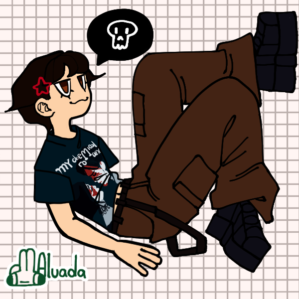

About the Author
Hi! My name is Max and I am a junior at Rutgers University studying Computer Science + Information Technology and Informatics with a minor in Women's Gender and Sexuality Studies. In my free time I like to crochet, knit, listen to music, draw, watch horror movies, and play video games. I'm from northern New Jersey, born and raised. For high school I went to a tech school where you become specialized in a concentration so I have prior programming knowledge. I learned how to program in Python, JavaScript, Java, HTML, and C# in high school and when I started college I learned more Java, C, and Linux. Other than my programming skills, I like to keep myself well-rounded and do humanities/art/creative classes because I think the skills are very important. I am also part of the executive board for Queer and Asian (secretary) and Triota Honor Society (vice president), as well as a graphic design associate for the Rutgers Esports Club. In general, I like combining many different aspects of my interests into the work I produce.
Here is a link to my Github: